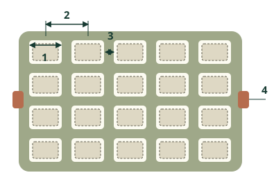

About Erry Mobility
Biomedical engineering for equitable access and meaningful participation.
Engineering accessibility. Enabling participation.
Erry Mobility is an independent, student-led biomedical engineering initiative exploring how human movement, assistive technology and accessible design intersect. Scientific lessons, interactive demonstrations and exploratory models show how everyday tools and environments can accommodate different functional needs.
The educational prototype is for people exploring everyday accessibility, their supporters and students. It starts with practical questions about typing, handling objects and moving through everyday spaces.

The story behind Erry Mobility.
I started Erry Mobility from my lived experience of cerebral palsy and my curiosity about how everyday tools accommodate different ways of moving. Typing gave me a practical question to explore. What changes when the same keyboard moves closer?
That question led me to consider how tool geometry and the environment shape a task, and how to compare setups systematically. Through Erry Mobility, I want to turn everyday observations into design questions, visual demonstrations and tests I can explain. I see this project as a first step towards studying how affordable, adaptable tools might support everyday participation.
Our vision
A world where movement is not a barrier to opportunity.
We envision an inclusive society in which individuals with diverse motor abilities have equitable opportunities to participate in everyday life with dignity, confidence and independence.
Our mission
Bridging human needs and engineering innovation.
Our mission is to advance understanding of human movement and assistive technology through accessible biomedical education, interactive engineering demonstrations and the exploration of affordable, person-centred adaptations.
Explore human movement · Try a typing setup · Explore assistive technology
Our goal and strategic objectives
Turning understanding into accessibility.
To explore how biomedical engineering can address everyday barriers to participation by developing, evaluating and communicating practical assistive design concepts that respond to diverse functional needs.
Strategic objectives
These five objectives guide the project’s development.
Advance biomedical understanding
Make human anatomy, motor control, biomechanics and movement-related conditions more understandable through scientifically grounded visual education.
Promote accessible innovation
Explore affordable and practical assistive design concepts that accommodate diverse movement abilities and everyday needs.
Encourage evidence-informed engineering
Apply systematic observation, measurement, prototype evaluation and transparent reporting to investigate assistive design concepts.
Foster dignity and inclusion
Challenge misconceptions about physical disability and promote a greater understanding of individual abilities, autonomy and participation.
Build a foundation for future research
Establish an educational and technical foundation for the future development of accessible, adaptable and user-centred biomedical technologies.
Our guiding principles
- Dignity
- Respect each person’s agency, abilities, preferences and aspirations.
- Equity
- Recognise that people may need different tools or environments to participate equitably.
- Human-centred innovation
- Begin with the experiences and needs of the people a design is intended to support.
- Scientific integrity
- Distinguish established knowledge, teaching models, checked calculations and open questions.
- Individualisation
- Account for differences in circumstances, goals and preferred ways of moving.
- Responsible engineering
- Consider safety, accessibility, affordability, privacy, usability and limitations throughout development.
From human needs to engineering solutions.
- Listen. Start with lived experience of reaching for and selecting keys.
- Define. Use motor control and reach geometry to describe one task and its constraints.
- Design. Choose an affordable change, such as moving a keyboard already in use.
- Prototype. Make a keyboard-position comparison or a conceptual keyguard drawing.
- Evaluate. Compare matched typing trials using time, final text errors and optional comfort.
- Refine. Check calculations and controls, then record revisions and unanswered questions.

Project development and founder contribution.
Erry’s lived-experience brief shaped the project’s focus on everyday access. Erry selected typing and movement as priorities, directed revisions to the learning structure, and reviewed the visual prototypes. That feedback shaped the connected anatomy illustration and how the keyguard examples communicate alignment.
How AI, sources and review were used
AI tools supported software implementation, scientific illustration, draft explanations and revision. Scientific references are linked in the relevant lessons. Founder review informed design choices. Executed browser and calculation tests provide evidence about specific software behaviours. Independent specialist review of the concept anatomy and physical device testing remain outstanding.
An interdisciplinary foundation for biomedical engineering.
The project turns introductory concepts into questions and demonstrations that can be explored further through formal study.
See the disciplines and their project examples
- Anatomy, physiology and neuroscience
- Upper-limb structures, muscle activation, motor planning and sensory feedback in Understand CP.
- Biomechanics, engineering mathematics and computational modelling
- Reach distances and static support geometry in the worked engineering models.
- Rehabilitation engineering and assistive technology
- Everyday task adaptations, keyboard positioning and conceptual keyguards.
- Programming and experimental design
- Pause-adjusted timing, edit distance and controlled comparisons in the Typing Setup Lab.
- Human–computer interaction
- Keyboard-operated controls, written alternatives and on-screen input.
- Healthcare information technology and engineering ethics
- Optional browser-local journal, CSV export, bounded scientific claims and privacy considerations for exploratory task records.
Current achievements and future direction
The prototype includes visual movement lessons, conceptual assistive designs, a geometric reach calculator, a typing comparison and an optional browser-local journal.
See the development timeline
- Completed · Identify the problem. The lived-experience brief focused the project on everyday typing and movement access.
- Completed · Explore biomedical principles. Movement and anatomy lessons explain selected mechanisms.
- Completed · Establish requirements. The Engineering Lab records accessibility, cost, measurement and privacy requirements.
- Completed · Develop prototypes. The typing comparison, reach calculator and conceptual keyguard drawings are available.
- Completed · Refine. Visual lessons, comparison controls and the institutional navigation were revised.
- Completed · Verify defined behaviours. Unit tests and Chromium checks cover specific calculations and interface behaviour.
- Planned · Develop and evaluate further. Seek specialist review, test accessibility with intended users, and assess a physical concept’s dimensions, materials and fit.
Longer-term interests include affordable, portable and adaptable technologies for rehabilitation and everyday participation. Specialist review, participant evaluation and physical prototyping are proposed.
Scientific integrity, limitations and transparency
Erry Mobility provides exploratory learning and engineering demonstrations. Illustrations simplify anatomy and models depend on stated assumptions. Individual typing trials describe a particular task under recorded conditions. They cannot establish population outcomes or clinical effectiveness. The conceptual devices require physical and professional evaluation. The site provides no diagnosis or treatment.
Typing trials stay in the current session unless you explicitly save a browser-local journal entry or export a CSV. Journal records remain in the current browser, with no account or server-side journal storage. The browser’s storage is not encrypted by the project. You can export a backup before changing devices or clearing browser data.
Read the study scope · See the scientific references · Review the verification methods